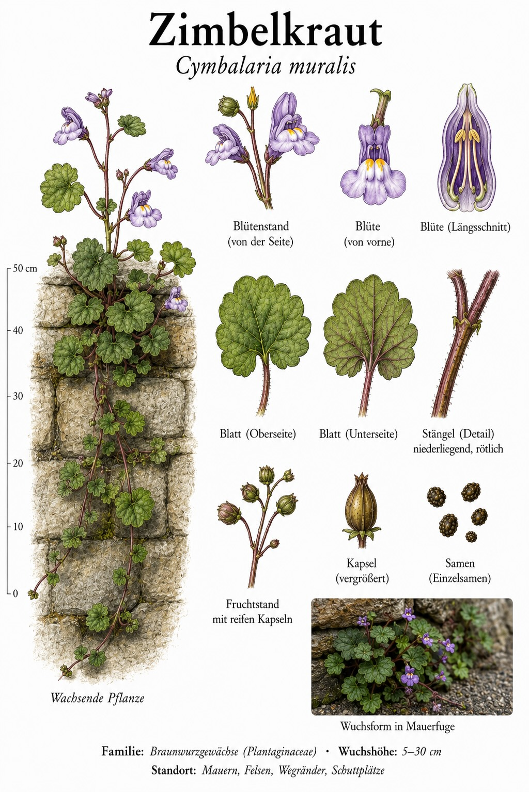
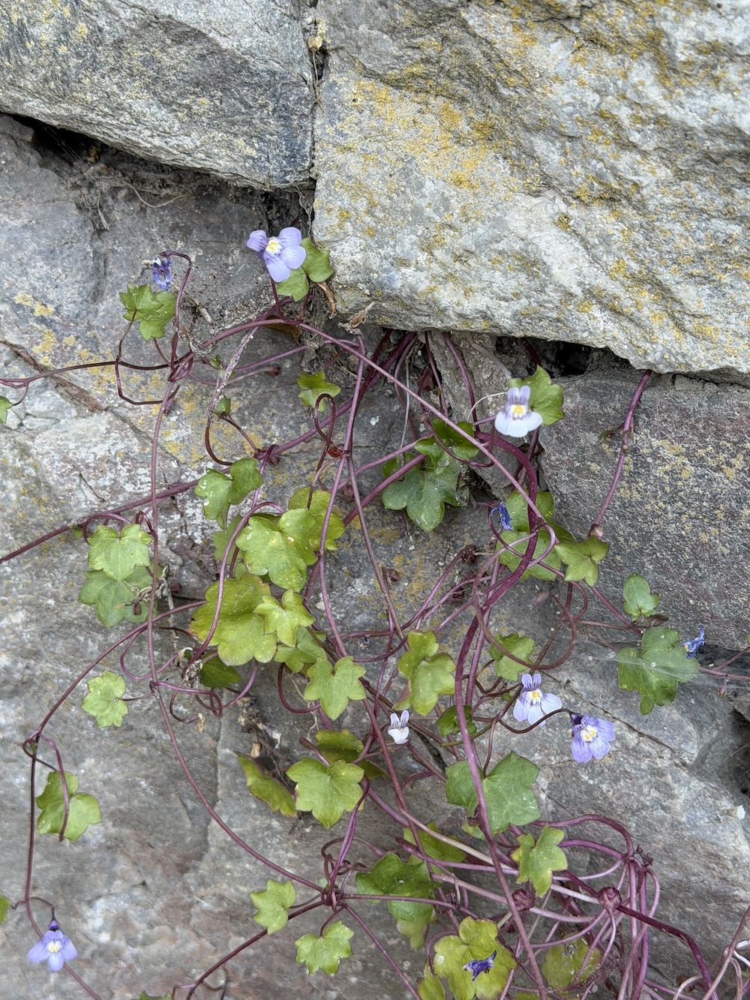
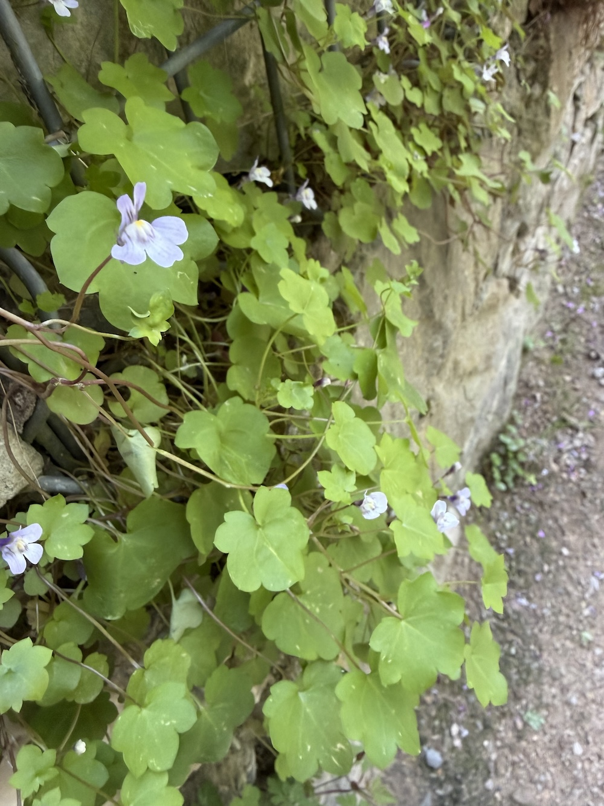

Der zierliche Mauerkünstler – und er pflanzt seine Samen selbst in die Ritzen.



Lila Löwenmäulchen an der Mauer
Von Mai bis September quellen die kleinen violetten, gelb gefleckten Rachenblüten aus Mauerritzen und Felsspalten – jede sieht aus wie ein winziges Löwenmäulchen. Die rundlich-gelappten Blätter erinnern an Efeu, die niederliegenden Stängel sind oft rötlich überlaufen. Ursprünglich stammt das Zimbelkraut aus dem Mittelmeerraum, heute ist es an vielen alten Mauern eingebürgert.
Ein Pflänzchen, das selbst sät
Besonders raffiniert ist seine Aussaat-Strategie: Vor der Blüte wachsen die Blütenstiele dem Licht entgegen. Nach der Bestäubung drehen sie sich um und biegen sich vom Licht weg – mitten hinein in dunkle Mauerritzen. Genau dort werden die reifen Kapseln abgelegt, sodass die nächste Generation gleich am richtigen Ort keimt.
Wissenswertes & Merksätze
Selbstaussaat in die Ritze
Nach der Blüte dreht sich der Fruchtstiel von der Sonne weg und schiebt die Samen aktiv in dunkle Spalten – clevere Selbstaussaat am Bauwerk.
Efeu-Blatt, Löwenmaul-Blüte
Rundlich-gelappte Blätter wie kleiner Efeu plus eine Blüte wie ein winziges Löwenmäulchen – zusammen unverwechselbar.